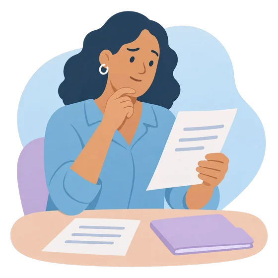
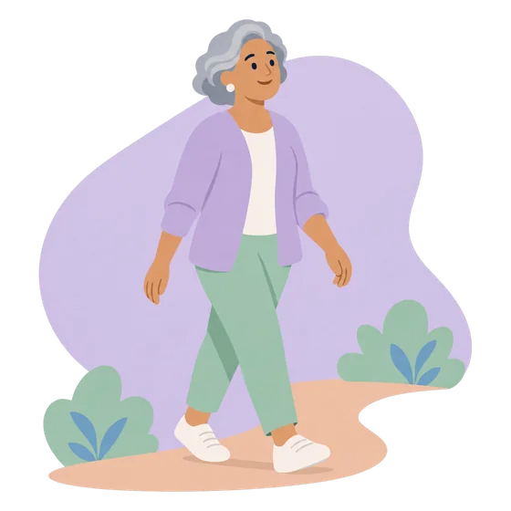

Recursos de confianzaTrusted resources
Información elaborada por sociedades científicas, organismos públicos y asociaciones de pacientes, organizada según el momento en que estás.Information produced by scientific societies, public agencies and patient associations, organized by the stage you are at.
Borrador. Selección pendiente de revisión por el equipo clínico. Son enlaces a sitios externos: su contenido es responsabilidad de cada organización.Draft. Selection pending review by the clinical team. These are links to external sites: their content is the responsibility of each organization.

Mientras te estudianWhile you are being tested
Para entender qué es el síndrome de Cushing y por qué te piden tantas pruebas.To understand what Cushing's syndrome is and why so many tests are needed.
El síndrome y la enfermedad de Cushing: respuestas a sus preguntasCushing's syndrome and disease: answers to your questionsES · EN
Pituitary Society · Endo-ERNCausas, síntomas, pruebas diagnósticas y opciones de tratamiento, explicadas para pacientes.Causes, symptoms, diagnostic tests and treatment options, explained for patients.
Entendiendo el síndrome de CushingUnderstanding Cushing's syndromeES · EN
Cushing's Support & Research Foundation · Endo-ERNFolleto de una fundación de pacientes: qué lo causa, sus síntomas y cómo se diagnostica.Leaflet from a patient foundation: what causes it, its symptoms and how it is diagnosed.
Tras el diagnóstico y durante el tratamientoAfter diagnosis and during treatment
Para conocer mejor la enfermedad, cuidarte en el día a día y encontrar apoyo.To learn more about the condition, look after yourself day to day and find support.
Guía educativa para pacientes con síndrome de CushingEducational guide for patients with Cushing's syndromeES
Sociedad Española de Endocrinología y Nutrición (SEEN) · PDFQué es, síntomas, diagnóstico y recomendaciones generales sobre peso, actividad física y presión arterial.What it is, symptoms, diagnosis and general advice on weight, physical activity and blood pressure (in Spanish).
Síndrome de Cushing: recursos para pacientesCushing's syndrome: patient resourcesES
NICHD · Institutos Nacionales de Salud de EE. UU. (NIH)Directorio de información fiable, organizaciones de apoyo y comunidades de pacientes.Directory of reliable information, support organizations and patient communities (in Spanish).
Recursos para cada etapaResources for every stageEN
Cushing's Support & Research Foundation (CSRF)Fundación de pacientes con información desde antes del diagnóstico hasta la vida después del Cushing (en inglés).Patient foundation with information from before diagnosis to life after Cushing's.
Asociaciones de pacientesPatient associations
En España existen la Asociación Nacional de Síndrome de Cushing y el grupo Juntos ante el Cushing. Pregunta a tu equipo de endocrinología por grupos de apoyo cerca de ti.In Spain there are the National Cushing's Syndrome Association and the group "Juntos ante el Cushing". Ask your endocrinology team about support groups near you.
Pendiente: enlaces oficiales y recursos en Colombia.Pending: official links and resources in Colombia.

En la recuperaciónDuring recovery
Si tomas corticoides de reemplazo: cómo identificarte y qué hacer en una emergencia. Aprende siempre la técnica de inyección con tu equipo.If you take replacement steroids: how to identify yourself and what to do in an emergency. Always learn the injection technique with your team.
Tarjeta de emergencia para adultos con insuficiencia suprarrenalEmergency card for adults with adrenal insufficiencyES
SEEN · AdrenoSEENTarjeta descargable para llevar siempre contigo e indicar al personal sanitario que necesitas corticoides en una emergencia.Downloadable card to carry at all times, telling healthcare staff that you need steroids in an emergency.
Cómo administrar la hidrocortisona inyectableHow to give injectable hydrocortisoneES
SEEN · AdrenoSEEN · vídeovideoVídeo de la técnica para el kit de emergencia. Úsalo como recordatorio de lo que te enseñe tu equipo.Video of the technique for the emergency kit. Use it as a reminder of what your team teaches you.
Asociación de pacientes con insuficiencia suprarrenalAdrenal insufficiency patient associationES
ADISENTarjetas de identificación bilingües (español e inglés) e información práctica para el día a día.Bilingual (Spanish and English) identification cards and practical day-to-day information.
Enlaces revisados en noviembre de 2026. Si alguno deja de funcionar, avísale a tu equipo.Links reviewed in November 2026. If any stops working, let your team know.